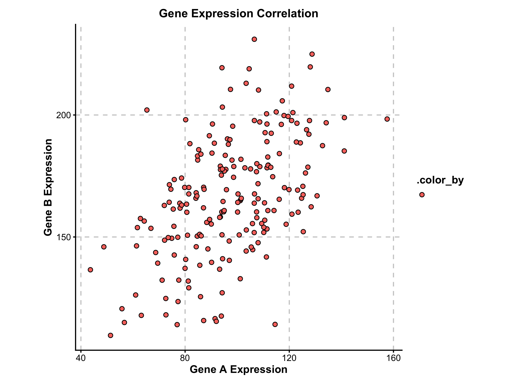
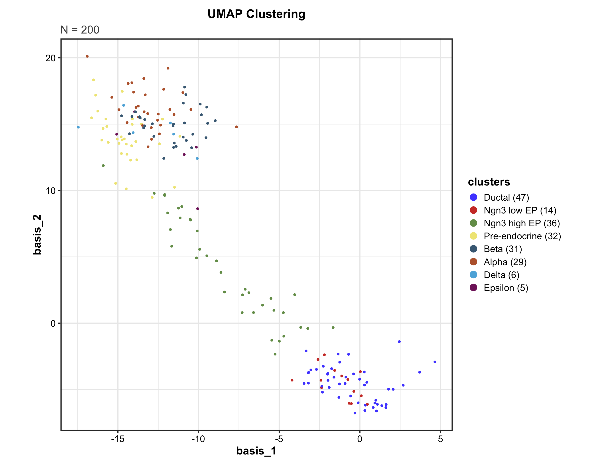
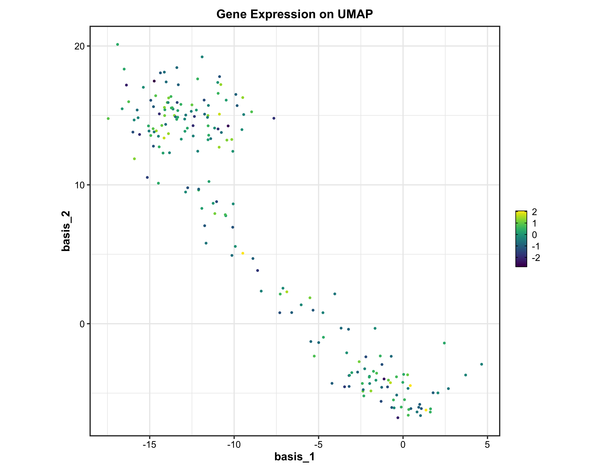
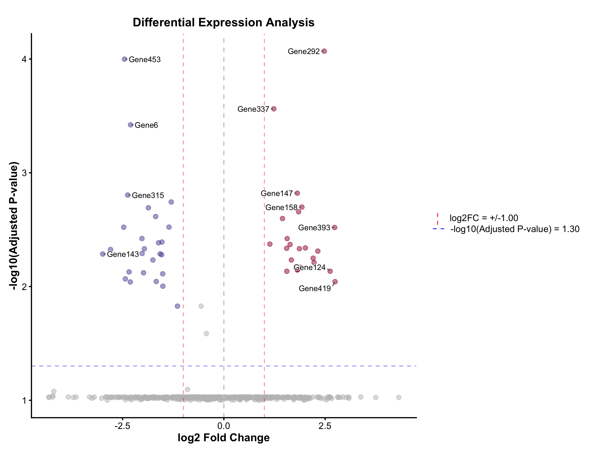
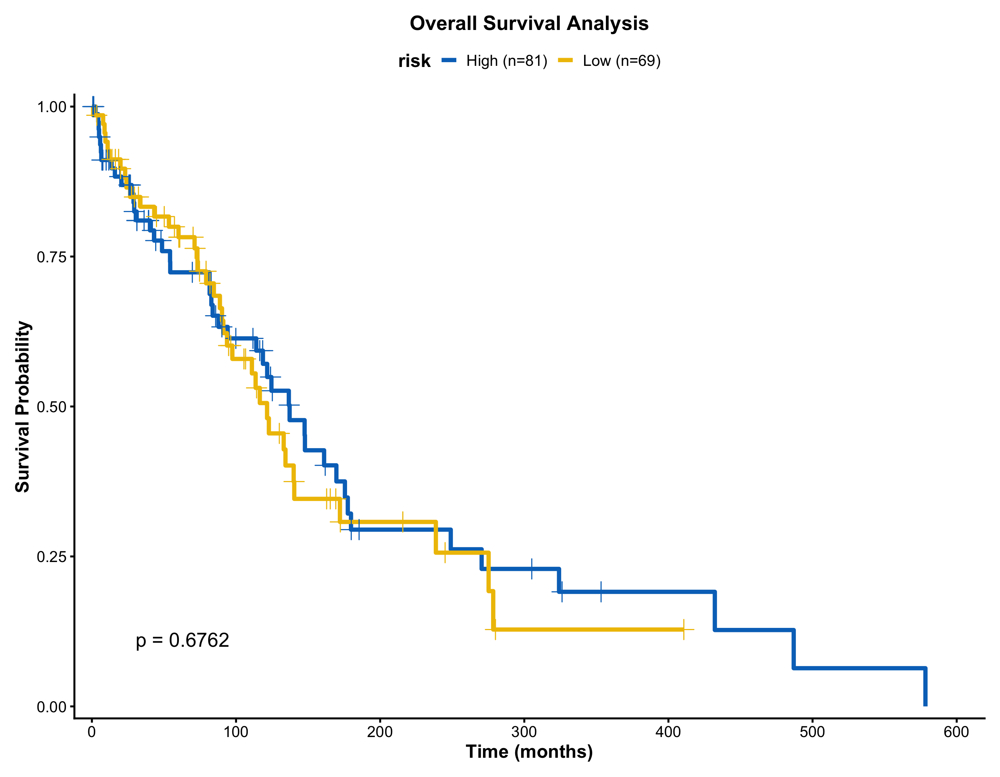
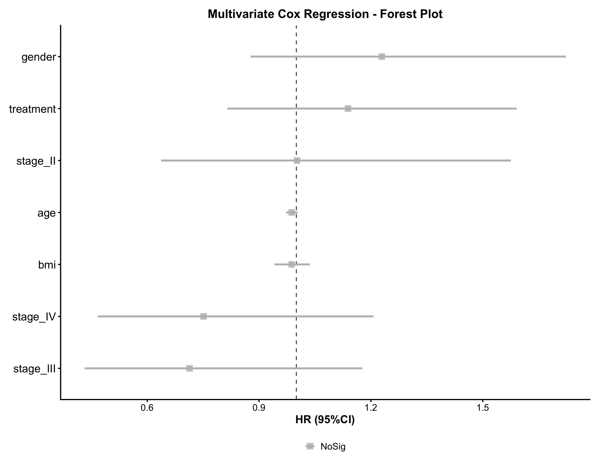
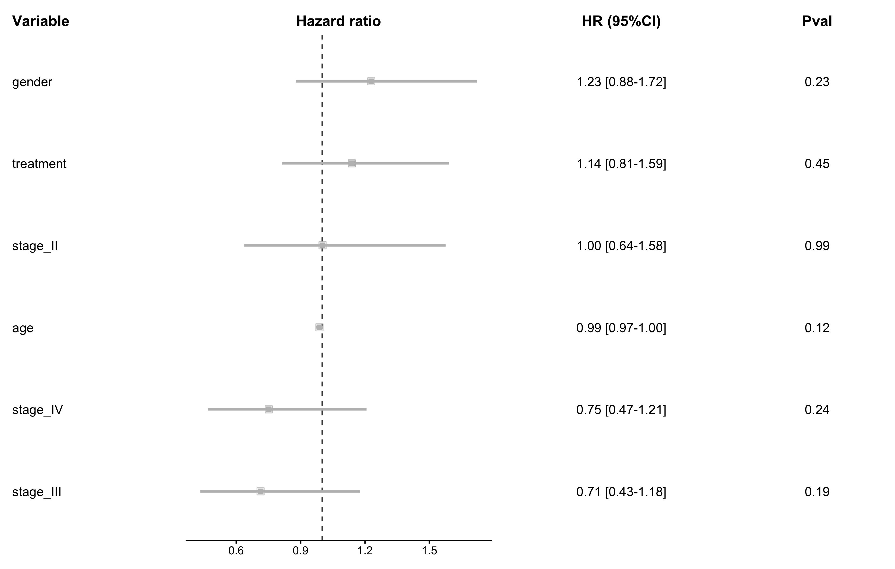
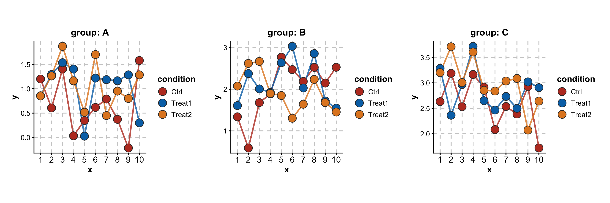

Comprehensive Visualization Toolkit for Biomedical Research
ggforge is a comprehensive and elegant visualization framework designed for biomedical and bioinformatics research. Built on ggplot2 with a modern modular architecture, it provides 40+ plotting functions covering statistical graphics, enrichment analysis, single-cell transcriptomics, spatial analysis, survival analysis, and genomics visualization.
Documentation
Complete documentation is available at: https://zaoqu-liu.github.io/ggforge
- Getting Started Tutorial: https://zaoqu-liu.github.io/ggforge/articles/introduction.html
- Function Reference: https://zaoqu-liu.github.io/ggforge/reference/
- GitHub Repository: https://github.com/Zaoqu-Liu/ggforge
Installation
# Install from GitHub
if (!require("devtools")) install.packages("devtools")
devtools::install_github("Zaoqu-Liu/ggforge")Examples
Basic Statistical Plots
Box Plots
data <- data.frame(
group = rep(c("Control", "Treatment A", "Treatment B"), each = 50),
value = c(rnorm(50, 10, 2), rnorm(50, 12, 2.5), rnorm(50, 15, 2))
)
BoxPlot(
data = data,
x = "group",
y = "value",
palette = "lancet",
add_point = TRUE,
point_alpha = 0.3,
xlab = "Treatment Group",
ylab = "Expression Level",
title = "Gene Expression Across Treatment Groups"
)
Violin Plots
ViolinPlot(
data = data,
x = "group",
y = "value",
palette = "npg",
add_box = TRUE,
add_point = TRUE,
point_size = 0.8,
point_alpha = 0.4,
title = "Distribution of Gene Expression"
)
Scatter Plots
n <- 200
scatter_data <- data.frame(
gene_A = rnorm(n, 100, 20),
gene_B = rnorm(n, 100, 20),
cell_type = sample(c("T cell", "B cell", "Monocyte"), n, replace = TRUE)
)
scatter_data$gene_B <- scatter_data$gene_B + 0.7 * scatter_data$gene_A + rnorm(n, 0, 10)
ScatterPlot(
data = scatter_data,
x = "gene_A",
y = "gene_B",
group_by = "cell_type",
palette = "jco",
add_smooth = TRUE,
add_stat = TRUE,
xlab = "Gene A Expression",
ylab = "Gene B Expression",
title = "Gene Expression Correlation"
)
Density Plots
DensityPlot(
data = data,
x = "value",
group_by = "group",
palette = "npg",
add_rug = TRUE,
xlab = "Expression Value",
title = "Distribution of Gene Expression"
)
Bar Plots
BarPlot(
data = data,
x = "group",
y = "value",
palette = "Set2",
add_errorbar = TRUE,
errorbar_type = "se",
title = "Mean Values with Standard Error",
xlab = "Treatment Group",
ylab = "Mean Expression"
)
Line Plots
time_data <- data.frame(
time = rep(1:10, 3),
value = c(
cumsum(rnorm(10, 0.5, 1)),
cumsum(rnorm(10, 0.3, 1)),
cumsum(rnorm(10, 0.7, 1))
),
group = rep(c("Group A", "Group B", "Group C"), each = 10)
)
LinePlot(
data = time_data,
x = "time",
y = "value",
group_by = "group",
palette = "nejm",
add_point = TRUE,
add_smooth = TRUE,
title = "Time Course Analysis",
xlab = "Time Point",
ylab = "Value"
)
Enrichment Analysis
Enrichment Network
data("enrich_multidb_example")
EnrichNetwork(
data = enrich_multidb_example,
top_term = 20,
layout = "fr",
palette = "Set3",
title = "Enrichment Network Analysis"
)
Enrichment Map
data("enrich_example")
EnrichMap(
data = enrich_example,
top_term = 25,
layout = "fr",
palette = "Spectral",
title = "GO Enrichment Map"
)
GSEA Visualization
GSEA Summary Plot
data("gsea_example")
GSEASummaryPlot(
data = gsea_example,
top_term = 20,
palette = "RdBu",
title = "GSEA Analysis Summary"
)
GSEA Enrichment Plot
GSEAPlot(
data = gsea_example,
gs = gsea_example$ID[1],
title = gsea_example$Description[1]
)
Single-Cell Analysis
Dimensionality Reduction
data("dim_example")
DimPlot(
data = dim_example,
x = "basis_1",
y = "basis_2",
group_by = "clusters",
palette = "igv",
point_size = 1.2,
add_label = TRUE,
label_insitu = TRUE,
title = "UMAP Clustering"
)
Feature Expression
dim_example$feature <- rnorm(nrow(dim_example))
FeatureDimPlot(
data = dim_example,
x = "basis_1",
y = "basis_2",
feature = "feature",
palette = "viridis",
point_size = 1.5,
title = "Gene Expression on UMAP"
)
RNA Velocity
embedding <- as.matrix(dim_example[, c("basis_1", "basis_2")])
v_embedding <- as.matrix(dim_example[, c("stochasticbasis_1", "stochasticbasis_2")])
VelocityPlot(
embedding = embedding,
v_embedding = v_embedding,
plot_type = "grid",
title = "RNA Velocity Analysis"
)
Genomics Visualization
Volcano Plot
deg_data <- data.frame(
gene = paste0("Gene", 1:500),
log2FC = rnorm(500, 0, 1.5),
pvalue = runif(500, 0, 0.1)
)
deg_data$padj <- p.adjust(deg_data$pvalue, method = "BH")
sig_up <- sample(1:500, 25)
sig_down <- sample(1:500, 25)
deg_data$log2FC[sig_up] <- abs(rnorm(25, 2, 0.5))
deg_data$log2FC[sig_down] <- -abs(rnorm(25, 2, 0.5))
deg_data$padj[c(sig_up, sig_down)] <- runif(50, 0, 0.01)
VolcanoPlot(
data = deg_data,
x = "log2FC",
y = "padj",
label_by = "gene",
x_cutoff = 1,
y_cutoff = 0.05,
nlabel = 10,
title = "Differential Expression Analysis",
xlab = "log2 Fold Change",
ylab = "-log10(Adjusted P-value)"
)
Manhattan Plot
gwas_data <- data.frame(
chr = rep(paste0("chr", 1:22), each = 500),
pos = rep(1:500, 22) * 1e5,
pvalue = runif(11000, 0, 1)
)
gwas_data$pvalue[sample(1:11000, 30)] <- runif(30, 0, 1e-8)
ManhattanPlot(
data = gwas_data,
chr_by = "chr",
pos_by = "pos",
pval_by = "pvalue",
threshold = 5e-8,
title = "Genome-Wide Association Study"
)
Survival Analysis
Kaplan-Meier Curve
surv_data <- data.frame(
time = rexp(150, 0.01),
status = sample(0:1, 150, replace = TRUE, prob = c(0.4, 0.6)),
risk = sample(c("Low", "High"), 150, replace = TRUE)
)
KMPlot(
data = surv_data,
time = "time",
status = "status",
group_by = "risk",
palette = "jco",
add_risktable = TRUE,
add_conf_int = TRUE,
add_pval = TRUE,
title = "Overall Survival Analysis",
xlab = "Time (months)",
ylab = "Survival Probability"
)
Cox Regression - Forest Plot
# Create sample data with multiple covariates
cox_data <- data.frame(
time = rexp(200, 0.01),
event = sample(0:1, 200, replace = TRUE, prob = c(0.3, 0.7)),
age = rnorm(200, 60, 10),
bmi = rnorm(200, 25, 4),
gender = sample(c("Male", "Female"), 200, replace = TRUE),
stage = sample(c("I", "II", "III", "IV"), 200, replace = TRUE),
treatment = sample(c("A", "B"), 200, replace = TRUE)
)
CoxPlot(
data = cox_data,
time = "time",
event = "event",
vars = c("age", "bmi", "gender", "stage", "treatment"),
plot_type = "forest",
palette = "nejm",
title = "Multivariate Cox Regression - Forest Plot"
)
Cox Regression - Detailed Forest Plot
CoxPlot(
data = cox_data,
time = "time",
event = "event",
vars = c("age", "gender", "stage", "treatment"),
plot_type = "forest2",
palette = "lancet",
digits = 2,
title = "Cox Regression with Statistical Table"
)
Network Visualization
Heatmap
set.seed(123)
mat <- matrix(rnorm(100), 10, 10)
rownames(mat) <- paste0("Gene", 1:10)
colnames(mat) <- paste0("Sample", 1:10)
Heatmap(
data = mat,
palette = "RdBu",
title = "Gene Expression Heatmap"
)
Chord Diagram
chord_data <- data.frame(
from = c("CD4 T", "CD8 T", "B cell", "NK", "Monocyte"),
to = c("Fibroblast", "Endothelial", "Fibroblast", "Tumor", "Tumor"),
value = c(15, 20, 10, 25, 18)
)
ChordPlot(
data = chord_data,
from = "from",
to = "to",
y = "value",
palette = "Set3",
title = "Cell-Cell Interaction Network"
)
Venn Diagram
venn_data <- list(
SetA = paste0("Gene", 1:100),
SetB = paste0("Gene", 50:150),
SetC = paste0("Gene", 80:180)
)
VennDiagram(
data = venn_data,
palette = "Set2",
title = "Gene Set Overlap"
)
Color Palettes
show_palettes(head(names(palette_list), 20))
#> [1] "1" "2" "3" "4" "5" "6" "7" "8" "9" "10" "11" "12" "13" "14" "15"
#> [16] "16" "17" "18" "19" "20"Advanced Features
Multi-Panel Layouts
multi_data <- data.frame(
x = rep(1:10, 9),
y = rnorm(90, rep(1:3, each = 30), 0.5),
group = rep(c("A", "B", "C"), each = 30),
condition = rep(rep(c("Ctrl", "Treat1", "Treat2"), each = 10), 3)
)
LinePlot(
data = multi_data,
x = "x",
y = "y",
group_by = "condition",
split_by = "group",
palette = "nejm",
add_point = TRUE,
combine = TRUE,
nrow = 1
)
Key Features
- 41 plotting functions covering comprehensive biomedical visualization needs
- Unified API design with consistent interface across all functions
- Intelligent type detection for automatic variable styling
- Extensive color palettes from RColorBrewer, ggsci, viridis, and custom collections
- Multi-panel layouts with automatic data splitting and combination
- Professional themes optimized for scientific publications
Function Categories
Statistical Plots
ScatterPlot(), LinePlot(), BarPlot(), BoxPlot(), ViolinPlot(), DensityPlot(), JitterPlot(), AreaPlot(), Histogram(), QQPlot(), TrendPlot(), RidgePlot(), DotPlot(), LollipopPlot(), WaterfallPlot()
Single-Cell & Spatial Analysis
DimPlot(), FeatureDimPlot(), VelocityPlot(), SpatImagePlot(), SpatPointsPlot(), SpatShapesPlot(), SpatMasksPlot()
Survival & Clinical
KMPlot() - Kaplan-Meier curves, CoxPlot() - Cox regression analysis, ROCCurve() - ROC curves
Networks & Relationships
CorPlot(), ChordPlot(), SankeyPlot(), Network(), AlluvialPlot()
Specialized Plots
Heatmap(), RadarPlot(), SpiderPlot(), PieChart(), RingPlot(), WordCloudPlot(), RarefactionPlot(), ClustreePlot(), CircosPlot(), SplitBarPlot()
Design Philosophy
ggforge follows key principles for scientific visualization:
- Consistency - Unified API design across all plotting functions
- Simplicity - Create complex visualizations with minimal code
- Flexibility - Full control over aesthetics and customization
- Intelligence - Automatic type detection and optimal defaults
- Quality - Professional output suitable for scientific publications
License
This project is licensed under the GPL-3 License. See LICENSE.md for details.
Author
Zaoqu Liu
- ORCID: 0000-0002-0452-742X
- Email: liuzaoqu@163.com
- Affiliation: Chinese Academy of Medical Sciences and Peking Union Medical College
Acknowledgments
This package is greatly inspired by and modified from plotthis by Panwen Wang. We are deeply grateful for the original work and design philosophy.
Additional acknowledgments: - ggplot2 - The grammar of graphics - patchwork - Multi-panel composition - The R community for their excellent packages and contributions